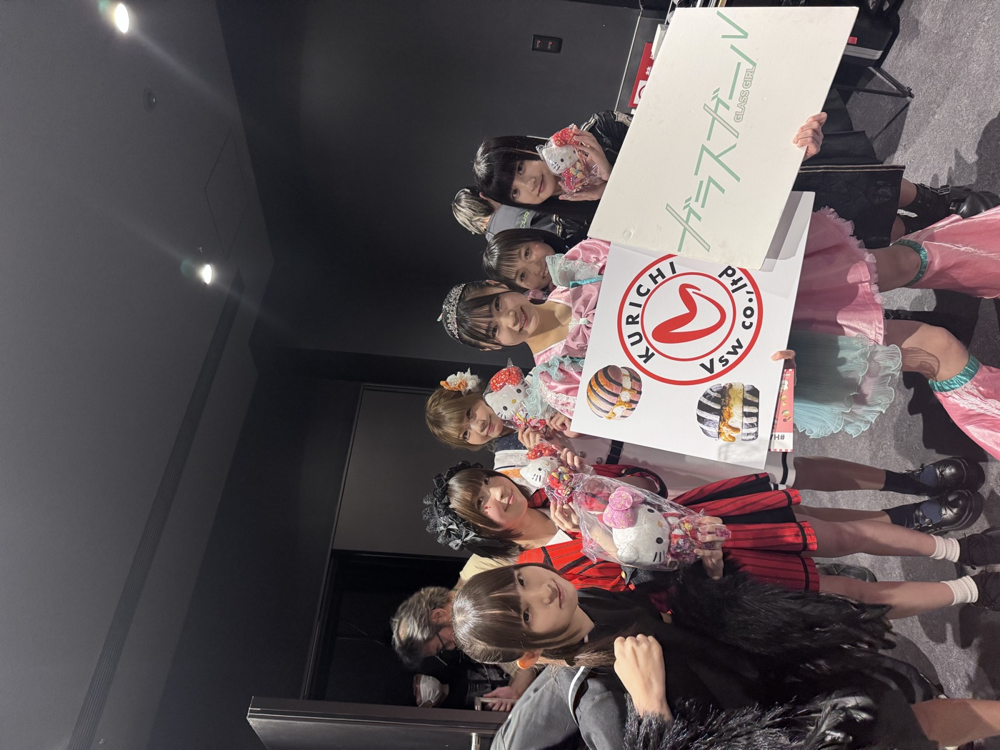
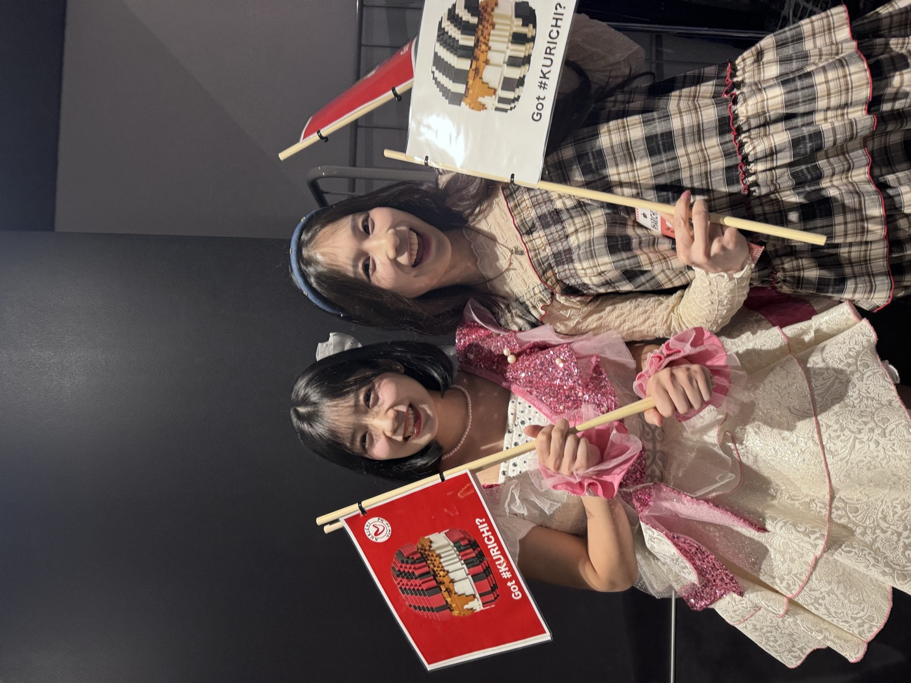
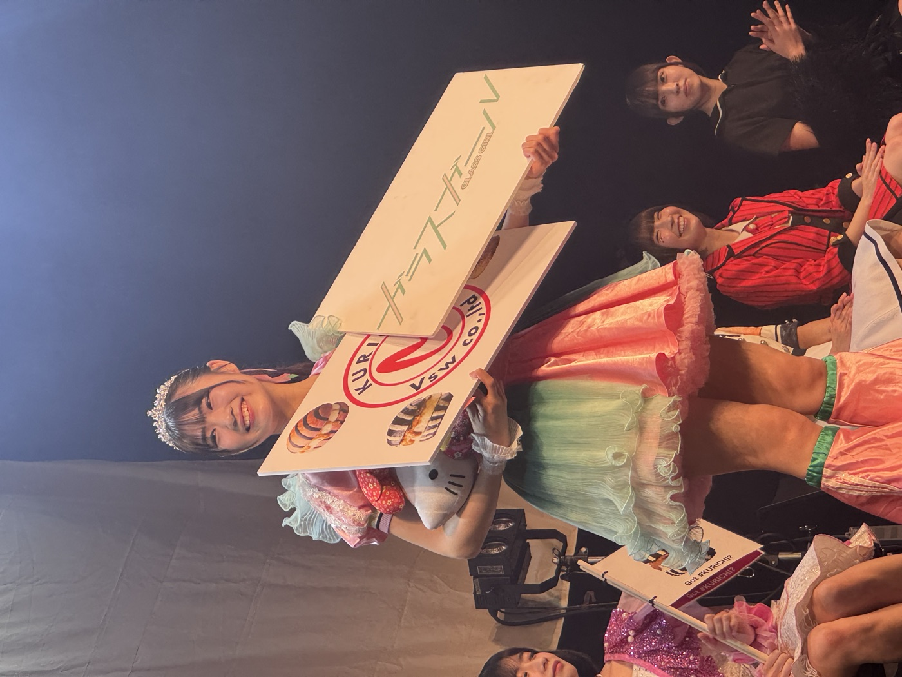
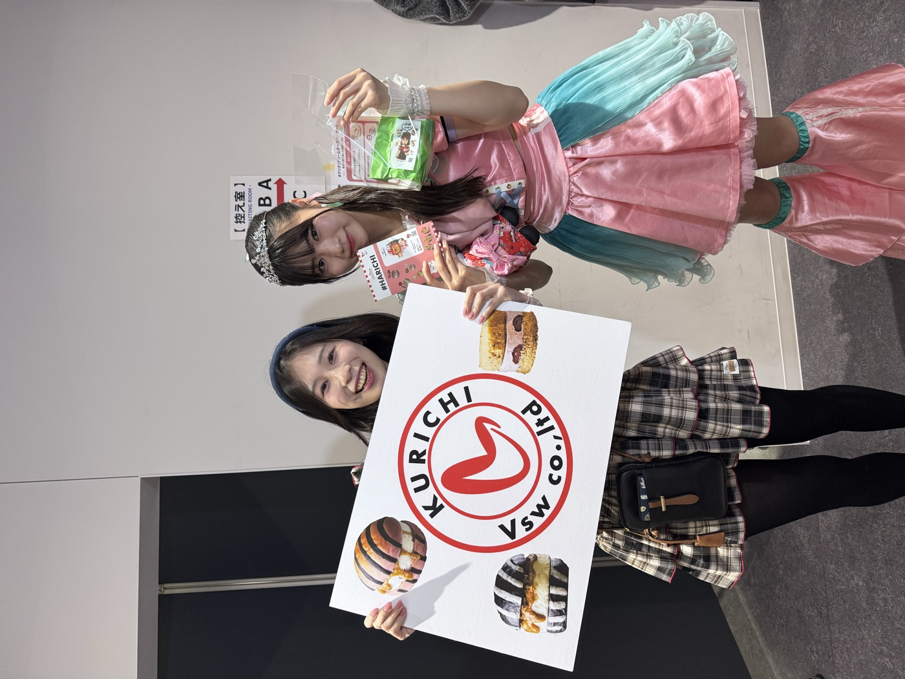
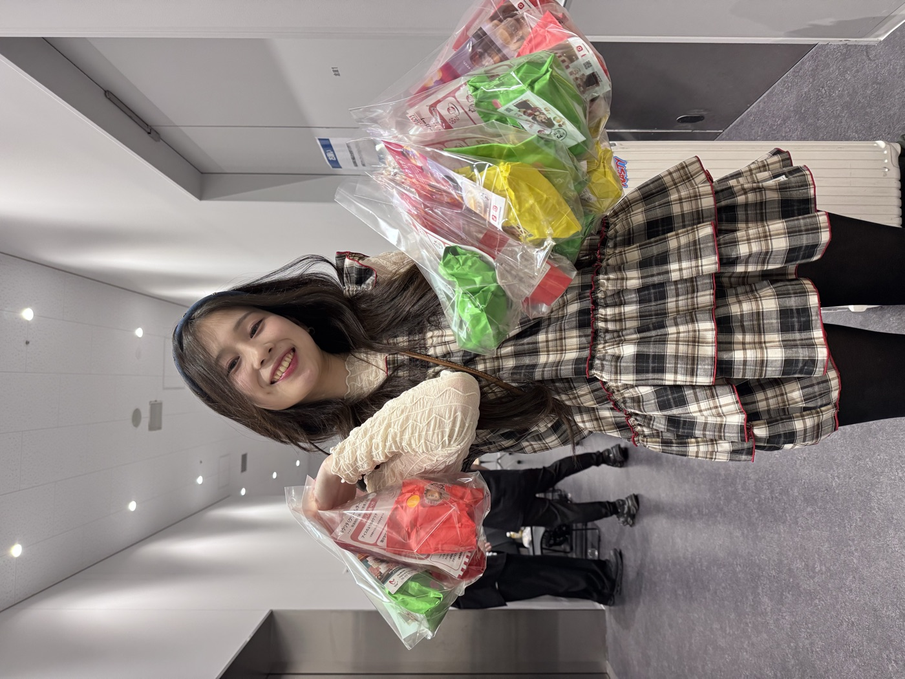

2026年4月12日（日）、五反田シティホールにて開催された「ガラフェスDASH!!〜春のアイドルマニフェスト〜」に、Vsw株式会社 / #クリチ が協賛＆出店しました🎉
チケットは事前完売、開場前から長い列。会場は熱く大盛況となりました。
🎤 イベント概要
- イベント名
- ガラフェスDASH!!〜春のアイドルマニフェスト〜（ガラスガール主催）
- 開催日
- 2026年4月12日(日)
- 会場
- 五反田シティホール
- 主催
- 株式会社grabss ／ ガラスガール
- 出演タイムライン
- 渡辺葵 / 雨宮みき / 綾崎ゆい / 椎名音心 / 香坂星奈 / うる・楠田彩琴
- 公式サイト
- ガラフェスDASH!! 公式ニュース →
① 🍔 チェキとセット販売
チェキ撮影とのセットで #クリチ を販売。「推しと一緒に食べる体験」として、多くの来場者に手にとっていただきました。
📷 マジカルボイスショットとは？
スマホで写真を撮って声を収録できるサービスです。この日だけの「ガラフェスDASH!!」オリジナルフレームで写真を撮れます。
事前に下記よりアプリをダウンロードしてください。
https://mazikal-voice-shot.codama.inc/ →
出店ラインナップは3種。
② 🏆 手押し相撲スポンサー＆審査員
ガラフェス名物のステージ企画「手押し相撲NO.1決定戦」に、Vsw株式会社／#クリチ がスポンサーとして協賛。また Vsw所属の 國見クリチ（#KURICHI ONNA） が審査員として参加しました。18歳以下のアイドル6名が真剣勝負を繰り広げ、会場は大きな歓声に包まれました。
ルール：制限時間30秒以内で勝敗を決する。両足の内側を付けて立ち、相手の手のみを狙って押す。爪先から50cm間隔を保ち、胸部以上への攻撃は禁止。フェイントは許可。

見事優勝された 末永澪璃 さん（YUM!-TUK!）には、#クリチ スポンサー賞として Vsw公式マスコットの 組み立て玩具「#HARICHI（ハリチ君）」 を贈呈🎁 笑顔で受け取ってくださり、"IP × 体験" がその場でつながった嬉しい瞬間でした。🧸✨

③ 🎁 楽屋差し入れ
出演者・スタッフの皆さまの楽屋にも #クリチ をお届け。イベント後には、アイドルの方々が #クリチ と一緒の写真をSNSにアップしてくださり、ブランドの輪が広がる一日となりました📸


「ガラフェスありがとうございました！ファンもアイドルも喜んでくれておりました。」
— 運営・あかぎさん、 澤さん より
🚀 今後の展開
- アイドル・ライブ会場・ファンイベントへの ブース出店メニュー を整備中
- 「國見クリチ（#KURICHI ONNA）」としてのステージ・SNS活動を継続
- 手押し相撲優勝者 末永澪璃さんのインタビュー記事に #クリチ が登場予定
- ライブ × #クリチ × ハリチ君 のコラボ企画を順次リリース
アイドル・アーティスト・ライブハウスの皆さま、"推し活" と "食" を結ぶ #クリチ 出店のご相談、お気軽にどうぞ。
導入・コラボレーション提案 → ／ お問い合わせ →